To answer: reply "as recommended for all". Or tap Differently on any question, then copy the reply from the bar at the foot.
3 new since the last page · 13 where this review changed or added to the recommendation · already answered and taken off: A2, A5, A17 (their numbers are not used again). C1 you answered today: every line wears its number. Its look is the question left.
Who the examples name
Saber is a master admin, home squadron 142. Hunter is an admin of 142 who is given Plan or View of 149. Ranger is a member of 142 with View of 149. Kestrel is 149's own admin. Every case touches only a person who works across two squadrons, unless it says otherwise.
In every picture "Today" is the real app now and "Drawn" is the note or question added on top. Tap a picture to enlarge it; tap again for full size.
Group C: keeping squadrons apart 11 · new today
- C1The bell's squadron number: how it looks newA plain grey number, first on every line. No colours.
- C10The squadron number's two fades newAt every change of squadron; not at sign-in.
- C11"Add a person" at the top, with Cancel newOne button beside Filter; the form opens under it.
- C2"+ Input" on the other squadronOnly that squadron's men offered.
- C3"+ Commitment" on the other squadron's SANS calendar changed in reviewOnly its own SANS aircrew offered.
- C4The "Welcome back" cardShown only on your own squadron.
- C5Bug reports and their squadron changed in reviewOne list for every admin; each report wears its number.
- C6A callsign of another squadron's archived man changed in reviewStays taken; the note names the squadron.
- C7The name badge on another squadron changed in review"View only" where you can only look.
- C8Another squadron's planner in the sign-off boxes changed in reviewKeep it.
- C9Admin → Users on 149 showing a 142 man changed in reviewKeep it; only his access line can be changed there.
Group A: the guard itself, before the first build 17
- A1Four small pop-ups that already closeThey keep closing; the pick goes through.
- A3The Scheduler Board and its own bellThe board is not a window; as today.
- A4Edit mode on Logic and QualsThe pick goes through; edit mode ends.
- A6The row's note"Save or cancel the open row", not "close".
- A7A window open on a page you are not looking at changed in reviewRefused; the note says where the window is.
- A8A tap on the bell that would change squadronRefused: "…then press the bell again."
- A9A save still going when you pick changed in reviewThe pick waits for the save.
- A10Two reasons at onceThe window first, then the open row, then Retry.
- A11A refused bell lineStays unread; the list stays open.
- A12The squadron list with a window openThe list opens; the squadron you press is refused.
- A13The note for a change not saved"Blocked: press Retry to save your changes, then pick 149."
- A14Where the note stands on a tabletUnder the control wherever the top bar shows the squadron picker.
- A15A phone with Inputs settings openAt the foot, as you ruled.
- A16The ☰ menu after a refused pickIt closes.
- A18"Check my quals", which brings your own squadron back changed in reviewNothing to build if C4 is taken.
- A19A holiday's bell line while you view another squadron changed in reviewYour own squadron comes into view first.
- A20The Tracker's question at the member-view switchAsked always, as drawn.
Group B: 12 that can wait (Logout, Undo, the refresh card)
- B1Logout while a change is not saved changed in review"Your last changes aren't saved yet. Log out anyway?"
- B2Logout with an input open"Log out and lose them?"
- B3Logout with an Admin → Users row openAsked, as drawn.
- B4Logout over a window with no question of its own changed in reviewOne question that names the window.
- B5Reaching Logout on a phone with a window openThe top bar stays in reach above the window.
- B6Undo with changes waiting on two other squadrons changed in review"Pick 142 or 149 to undo your changes there."
- B7Undo of "+ New squadron" while it is in viewIt waits on the squadron you made it from.
- B8The greyed Undo on a phoneA tap shows the reason.
- B9The refresh card when nothing is openShown all the same.
- B10The refresh card's words"You are 149's now".
- B11Refresh while a save is waitingRefresh tries the save once first.
- B12Five small cases where nothing is lostAll left as they are.
Group C: keeping squadrons apart
C1. The bell's squadron number: how it looks
What you ruled today: whenever your bell shows more than one squadron, every line wears its squadron number, "142" or "149", whichever squadron is picked. With one squadron shown: no numbers.
Today: the number is the small grey box after the first word of the line, and only on lines that are not from your home squadron. Hunter, home 142, with 149 picked: the 149 line wears "149" and the 142 line wears nothing.
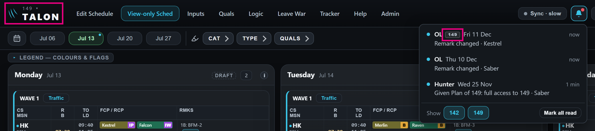
Today: 149 picked (top left). The 149 line wears "149"; the 142 line (Thu 10 Dec, Saber) wears nothing.
You asked whether a colour could do this instead: a colour at the left of each line, each squadron's "Show" button in the same colour.
Recommended: the plain grey number, and move it to the very start of every line, so the numbers stand in one column and the eye runs straight down them. No colour. A line about your own account ("Given Plan of 149…") keeps an empty place there, as you ruled.
Why not colour. In this app a colour already means something: cyan is "press me" and "picked" (the Show buttons are cyan when on), the blue dot is "unread", amber is "look", red is "stop", green is OIL and a holiday, purple is "this is you". A squadron colour would have to be a new one for each squadron, up to eight, and someone would have to choose each. It would need a key, where "149" needs none. And a man who cannot tell two colours apart would lose it, so the number would have to stay anyway.
The middle choice (the grey number softly tinted by squadron, its Show button the same): it keeps the number, but it is still eight tints to choose and tell apart, and the same grey number elsewhere in the app (Admin → Users' "Hunter 142") would then look different from the bell's. I would not take it. All three are drawn for you before anything is built: grey as today's place, grey in a column, and tinted.
↑ The list
C10. The squadron number's two fades at the top left
What you ruled today: the squadron number at the top left flashes twice, by fading, whenever the squadron changes, so a person sees that it changed. Three details are still open.
Example: Hunter, on 142, taps a 149 line in his bell. The page changes to 149 under him. The small "142" above TALON becomes "149" and fades out and in, twice.
Recommended:
When: at every change of the squadron in view while the app is open: your own pick, a bell line that takes you to another squadron, the refresh card. Not at sign-in and not when the app opens: nothing has changed then, and the claw is already moving. A person with one squadron never sees it.
How: the number only, never the TALON word or the claw. It dims to about a third and comes back, twice, in about one second in all, starting once the new page is drawn. It never goes fully out, so it can be read the whole time. No ring, no glow, no change of size or colour.
With "less motion" switched on in the phone or computer: no fading. The number stands bright white for about a second, then goes back to grey.
A refused pick: no flash. The squadron did not change; the grey "Blocked:" note says so.
The other choices: flash at sign-in too (it then flashes every morning for everyone with two squadrons, and stops meaning "it changed"); or a longer, slower fade (it then feels like the app is slow). A short film of it comes to you before it is built.
 Today, phone: the number that would fade, marked. On a phone it is small, so it is the fade that catches the eye.
Today, phone: the number that would fade, marked. On a phone it is small, so it is the fade that catches the eye.
↑ The list
C11. "Add a person" at the top of Admin → Users, with Cancel
What you ruled today: "Add a person" moves to the top of the page, so an admin never scrolls down to add people; and it gets a Cancel that clears everything typed or changed in it. Where at the top is still open.
Today: "Add a person" is a form that stands open at the very foot of the list, under every person.
Recommended: one button, "+ Add a person", on the People row beside Filter. A press opens the form in place, just under that row and above the first person. Its foot carries the two buttons the open row already has, side by side: "Add person" and "Cancel". Cancel clears the form and folds it shut. On a phone the button sits under the search box at full width.
Why a button and not the open form: left open at the top, the form (Home squadron, four boxes and a button) would push the whole list down a screen on a phone, for something done a few times a year. Quals' "+ Add person" button would land here with the form already open. The other choice: the form always open at the top. Both are drawn for you, desktop and phone, before anything is built.
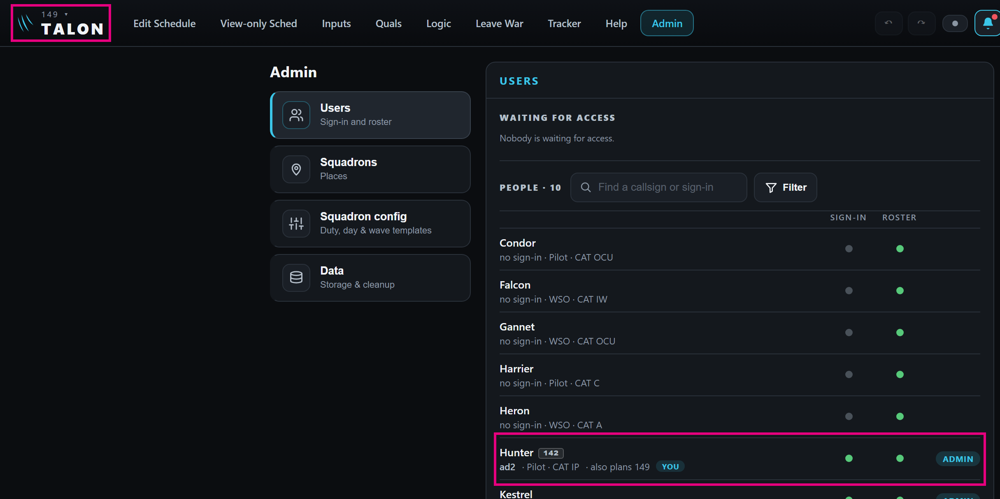
Today: the People row. The button would stand at its right, after Filter.
↑ The list
C2. "+ Input" on the other squadron's Inputs page
Only that squadron's men offered.
When this happens: Hunter (142's, Plan of 149) has 149 picked and presses "+ Input" on Inputs.
Today: the new input opens with Hunter himself as the Person; the list offers Hunter, then 149's ten. Saved, it becomes a 142 input (his own squadron's), with nothing said, the bar still reading 149.
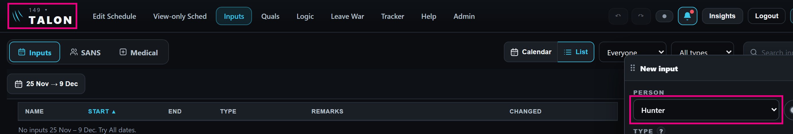
Today: "+ Input" on 149 opens with Hunter as the Person.
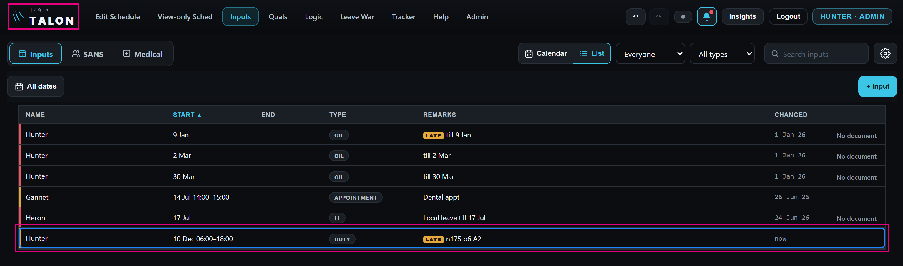
Today: saved, his 142 duty (10 Dec) shows in 149's list.
Recommended: on 149's page the Person box offers only 149's men and starts empty; Hunter files his own inputs on 142, where they belong.
The other choice: as today, himself first — the input is then filed on 142 from a page reading 149, and, with your answer today (another squadron's Inputs page never lists your own inputs), would no longer show on the page he filed it from.
↑ The list
C3. "+ Commitment" on the other squadron's SANS calendar
Only its own SANS aircrew offered.
When this happens: Hunter, SANS aircrew of 142 with Plan of 149, has 149 picked and adds a SANS commitment on a 149 day.
Today: the window offers only Hunter. Saved, it is counted on 142's SANS calendar (26 Nov reads "F 1" there) and not on 149's, which still reads "No commitments yet". With Hunter not SANS aircrew, the box is empty (149 has no SANS aircrew in the demo).
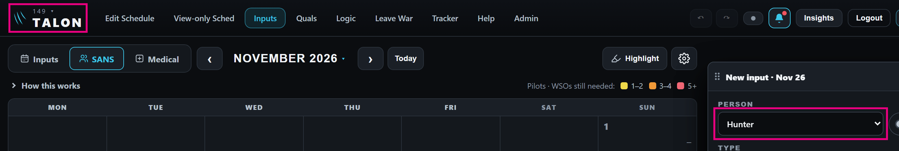
Today: on 149, the window offers only Hunter.
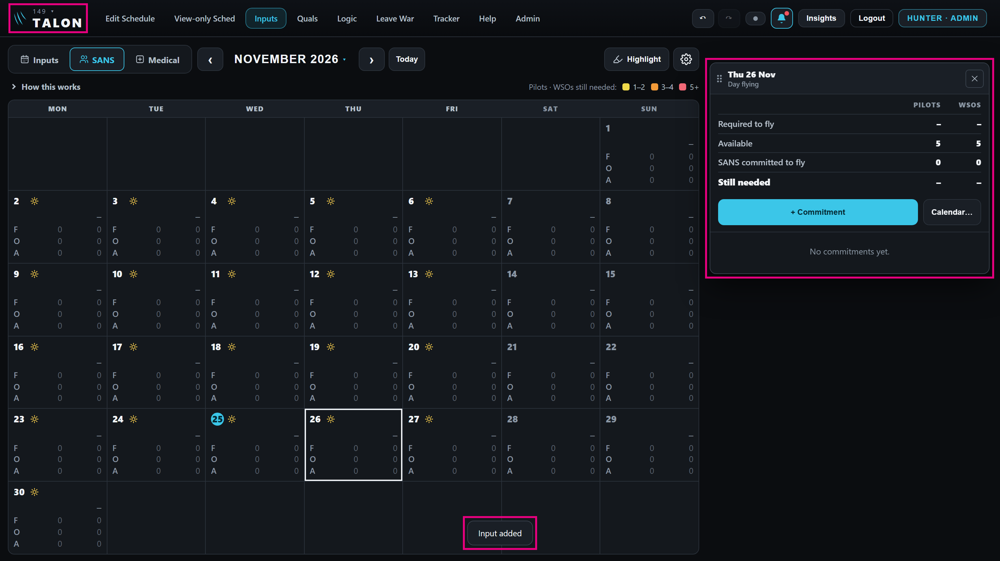
Today: after Add, 149's day still reads "No commitments yet" — it went to 142.
Recommended: on 149's SANS calendar the window offers only 149's SANS aircrew; with none, it says so and adds nothing. Hunter adds his own on 142's.
The words for "none" come to you as a draft before anything is built.
Changed in review. With no SANS aircrew on 149 I would grey the "+ Commitment" button itself, its reason "149 has no SANS aircrew." A window that opens and can add nothing is one press wasted. The reason is shown the way a greyed Undo shows its own (B8).
↑ The list
C4. The "Welcome back" card on another squadron
Shown only on your own squadron.
When this happens: Hunter, back from an archive, has Plan of 149 and picks 149. The card "Welcome back, Hunter — check your quals and CAT" is on every squadron's page.
Today: "Check my quals" opens 149's Quals, where his row is not; nothing is ringed, the card goes, nothing is said. (For a View holder it switches to 142 without a word — A18.)
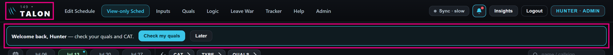
Today: the card on 149.
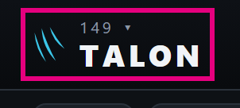
Today: after "Check my quals", 149's Quals — his row is not on it.
Recommended: the card shows only on his own squadron; on 149 it waits until he is back on 142, where "Check my quals" opens his own row. This also settles A18: the card never needs to switch squadron.
↑ The list
C5. Bug reports: who sees which, and how each shows its squadron
One list for every admin; each report wears its number.
When this happens: a member or an admin sends a report through Help, and an admin opens Help's list.
Today: one list for every squadron, a report naming no squadron. Saber sent one from 149; on 142 his bell lit and the list showed it with nothing to say it was 149's.
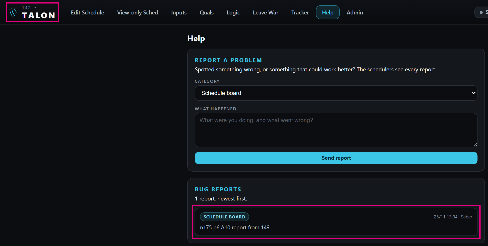
Today: on 142, Help lists a report sent from 149, with no squadron on it.
Recommended: each squadron's admins see only their own squadron's reports, and its bell rings only them; a master admin sees them all in one list, under a heading per squadron.
You said "one list, split by squadron when the admin views". The other reading: every admin sees every report, grouped under a heading per squadron. Found while pressing, a fault to fix in either case: a report a member sends is lost when he logs out, so no admin ever sees it today.
Changed in review. I would recommend differently. You said "one list". A fault in the app is the app's, not one squadron's: if Kestrel of 149 reports that a puck will not drop, Hunter of 142 should see it is already reported and not send it again. So: one list for every admin, newest first, each report wearing its squadron's grey number on its title line (the same grey number as the bell), with no headings; the bell rings only the admins of the squadron it was sent from, and a master admin. A report belongs to the squadron in view when it was sent (Saber's, sent while looking at 149, wears "149"). The cost: 142's admins can read what 149's people wrote. If you would not have that, take the page's first recommendation: each squadron's admins see only their own.
↑ The list
C6. An access request whose callsign belongs to another squadron's archived man
Stays taken; the note names the squadron.
When this happens: someone asks 149 for access as "Ace", and Ace is an archived man of 142.
Today: 149's admin reads "An archived man is already Ace … restore him first (▸ Archived)" — but 149 has no such fold; Ace is in 142's. 149 can only make a new person, and then two "Ace"s exist. (A callsign 142 is using now is refused on 149: "Ranger is already taken".)
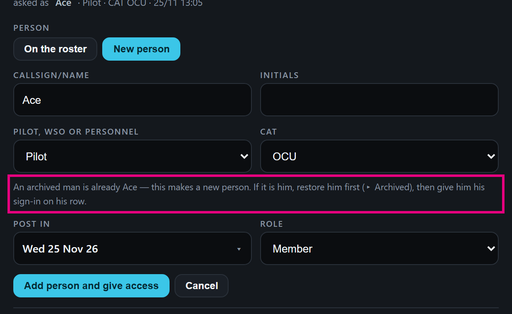
Today: the note on 149 points to "▸ Archived", which 149's page does not have.
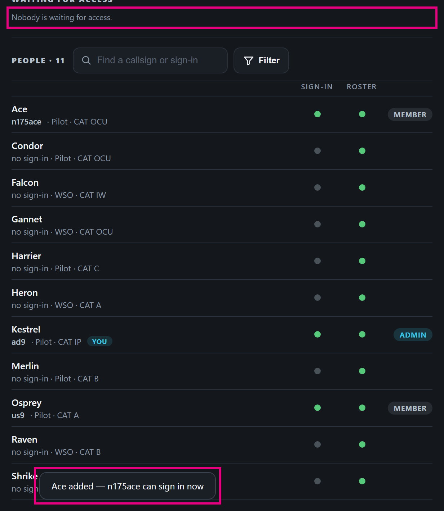
Today: 149 adds a new "Ace" — the second in the app.
Recommended: an archived man's callsign stays taken across the app, as a live one is (callsigns are unique across squadrons — your ruling for a move); 149's note says the callsign belongs to another squadron's archived man, and to choose another callsign or ask a master admin to restore him.
The note's words come to you as a draft before anything is built.
Changed in review. Two corrections. First, your ruling of 27 Sep is that callsigns are unique among the squadrons that fly one aircraft type, not across the whole app, so the words here should say "across the F-15 squadrons". Second, "ask a master admin to restore him" leads nowhere today: restored, Ace is 142's man again, and no screen yet moves a man to 149. Draft note: "Ace is the callsign of an archived man of 142. If this is him, ask 142's admin. If not, choose another callsign." The note for a callsign in use today ("Ranger is already taken") should name the squadron the same way.
↑ The list
C7. The name badge on another squadron
"View only" where you can only look.
When this happens: Hunter, 142's admin with View of 149, picks 149.
Today: the badge at the top right reads "Hunter · Admin" on 149 as on 142, though on 149 he can only look.
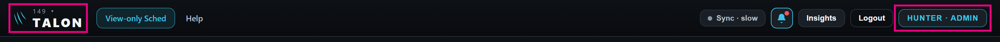
Today: View of 149, and the badge reads "Hunter · Admin".
Recommended: the badge names his role on the squadron in view: "Hunter · View" on 149, "Hunter · Plan" where he holds Plan, "Hunter · Admin" back on 142.
The words "View" and "Plan" are the app's own, from a person's row in Admin → Users.
Changed in review. I would recommend differently. The squadron list already says "Your squadron", "View only" or "Full access" beside each squadron, and the phone's menu already reads "149 · View only". A new word "Plan" on the badge would be a third name for full access. So: the badge changes only where he can only look: "Hunter · View only", the menu's own words (and "Ranger · View only" for a member, who is not 149's member either). Where he holds Plan it stays "Hunter · Admin", because there he works as its admin. On a phone the menu's line "Signed in as Hunter · Admin" changes the same way. Still to be tried before it is drawn: what a press on the badge does on a squadron he only views.
↑ The list
C8. Another squadron's planner in the sign-off boxes
Keep it.
When this happens: 149's scheduler fills SKED CK, PLANNED BY or APPROVED BY.
Today: besides 149's own, the boxes offer Saber (a master admin) always, and Hunter (142's, Plan of 149) on days his Plan covers once he carries the Scheduler tick — your ruling of 21 Nov.
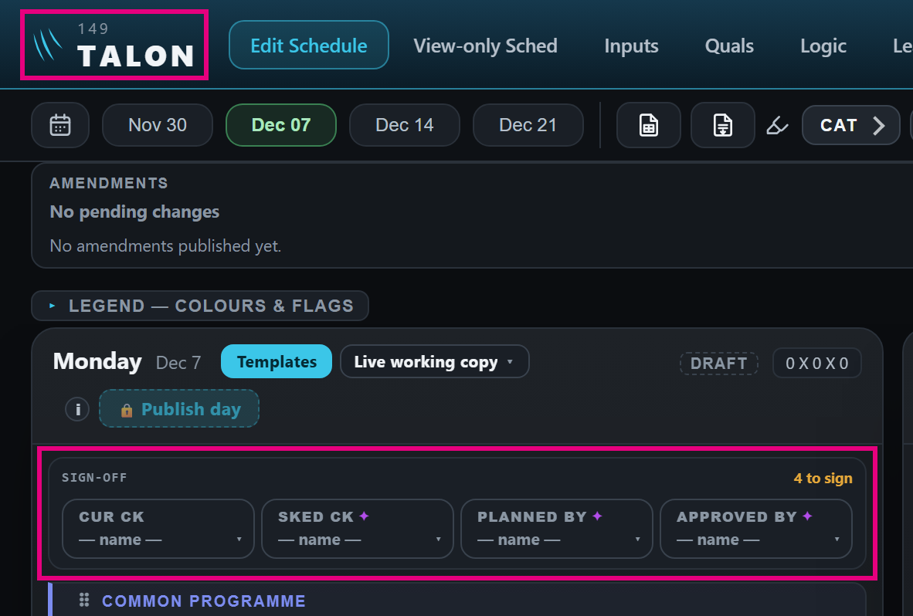
Today: 149's boxes on 7 Dec. Opened, SKED CK lists Kestrel, Hunter and Saber.
Recommended: keep it: Plan is given so he plans 149, and his name on what he planned is the true record. This is a deliberate planning of a man onto another squadron, the exception your rule makes.
The other choice: only 149's own people in the boxes; a Plan holder then plans 149 but cannot sign what he planned.
Changed in review. I agree, with one addition: in the box's list, a name from another squadron wears the grey "142" after it, as Hunter's row does on Admin → Users, so 149's scheduler sees whose man he is choosing.
↑ The list
C9. Admin → Users on 149 showing a 142 man
Keep it; only his access line can be changed there.
When this happens: 149's admin (or Hunter, or Saber) opens Admin → Users on 149.
Today: the list holds 149's ten and also "Hunter 142 · also plans 149"; a search finds 142's men, to give them View; a man's opened row lists both squadrons.
Today: Hunter's row on 149's list.
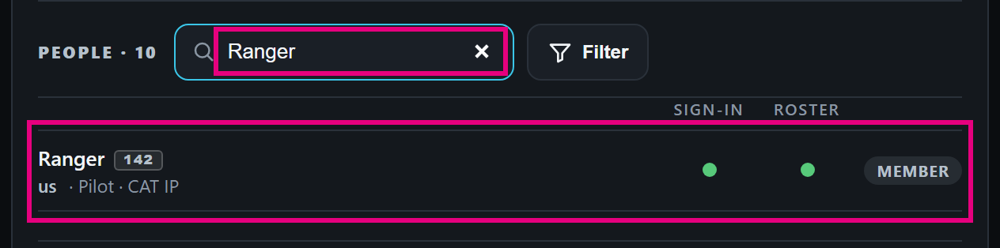
Today: a search on 149 finds Ranger, 142.
Recommended: keep both: 149's admins see who holds Plan over their squadron, and the search is how they give View — your rulings of 17 and 22 Nov. Each 142 man shown wears "142".
Changed in review. I agree with keeping both, with one change. Tried on the app, Ranger's opened row on 149's page has Save, Suspend, Archive and Delete all live for Hunter and Saber. That is a 142 record changed under a bar reading 149, which your rule of today is against. So: on 149's page a 142 man's row offers only his line for 149 (None, View, Plan); everything else about him is changed on 142's page. Not yet tried: what Kestrel, 149's own admin, sees on that row. And a master admin's "All squadrons" tick on this page has not been put to you against the same rule.
↑ The list
Group A: the guard itself, before the first build
A1. Four small pop-ups that already close when you press the top bar
They keep closing; the pick goes through.
When this happens: Traffic, Jump to a date, a day's details (ⓘ) or a document is open, and you pick the other squadron. Any day, for anyone working across two squadrons.
Today: these four already close by themselves at any press on the top bar, and the pick goes through in the same press. Nothing typed is lost: Traffic's one box (the airspace line) is saved as it is typed, and the other three have nothing to type.
 Today: Traffic open. The top bar is free above it.
Today: Traffic open. The top bar is free above it.
Recommended: leave them as today. They close and the pick goes through.
The other choice: they refuse like every other window, so a pick needs them closed first. One exception either way: a document opened over an input window. The input window is still open underneath, so the pick is refused because of it.
↑ The list
A3. The Scheduler Board
The board is not a window; as today.
When this happens: Hunter has 149's board open (a day opened from Edit Schedule) and presses a line in the board's own bell that belongs to 142.
Today: the board covers the whole screen, so the squadron picker and the badge cannot be reached from it. Its own bell can. Pressing a 142 line there closes the board, moves him to 142 and opens the input. Nothing is said, and nothing is lost: everything done on the board is saved as it is done.
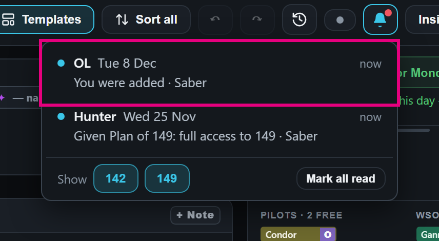
Today: the board's own bell, a 142 line in its list.
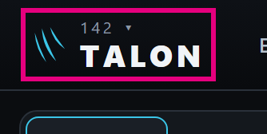
Today: after the press the bar reads 142.
Recommended: the board by itself is not "a window" for the guard. It behaves as today.
With the board's cancel-reason box or its "Sort all" question up, the board's bell is covered too, so there is nothing to press and nothing to decide. The other choice: the board refuses the line until it is closed with ✓ Done.
↑ The list
A4. Edit mode on Logic and on Quals
The pick goes through; edit mode ends.
When this happens: Saber is editing 142's Logic (or ticking Quals) and picks 149 without pressing Done.
Today: every change in edit mode is saved as it is made, into 142. Nothing is lost at the pick. But 149's page then opens already in edit mode, with Done showing, though he never pressed Edit there.
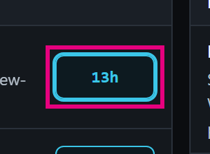
Today: Logic in edit mode on 142.
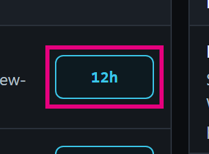
Today: after the pick, 149's Logic shows Done too.
Example: he changes Crew rest from 12h to 13h on 142 and picks 149. 142 keeps 13h, 149 still reads 12h, and 149's Logic is open for editing.
Recommended: the pick goes through, and the edit mode ends. 149's page opens as it normally does, not in edit mode.
The other choice: refuse the pick until Done is pressed. Found on the way, a fault to be fixed and not a question: after switching to the member view, Quals still shows Done.
↑ The list
A6. The row's note: "save or cancel the open row"
"Save or cancel the open row", not "close".
When this happens: the guard refuses a pick because an Admin → Users row is open with a change in it.
The draft you approved read "Blocked: close the open row, then pick 149." But the row has no Close and no ✕. It has Save and Cancel. The most natural way to "close" it (tap it shut, or Escape) throws the typing away with nothing asked, which is the very thing your ruling was made to stop.
Recommended: the note names the row's own two buttons.
Pick: Blocked: save or cancel the open row, then pick 149.
The member view: Blocked: save or cancel the open row, then switch to the member view.
A bell line: Blocked: save or cancel the open row, then press this line again.
The row is on another Admin section, out of sight: Blocked: save or cancel the open row on Users, then pick 149.
Giving access: Blocked: finish or cancel giving access, then pick 149.
+ New squadron: Blocked: save or cancel the new squadron, then pick 149.
Add a person (a draft, new): Blocked: add the person or cancel, then pick 149.
 Drawn, desktop: under the squadron picker; the open row with its Save and Cancel below.
Drawn, desktop: under the squadron picker; the open row with its Save and Cancel below.
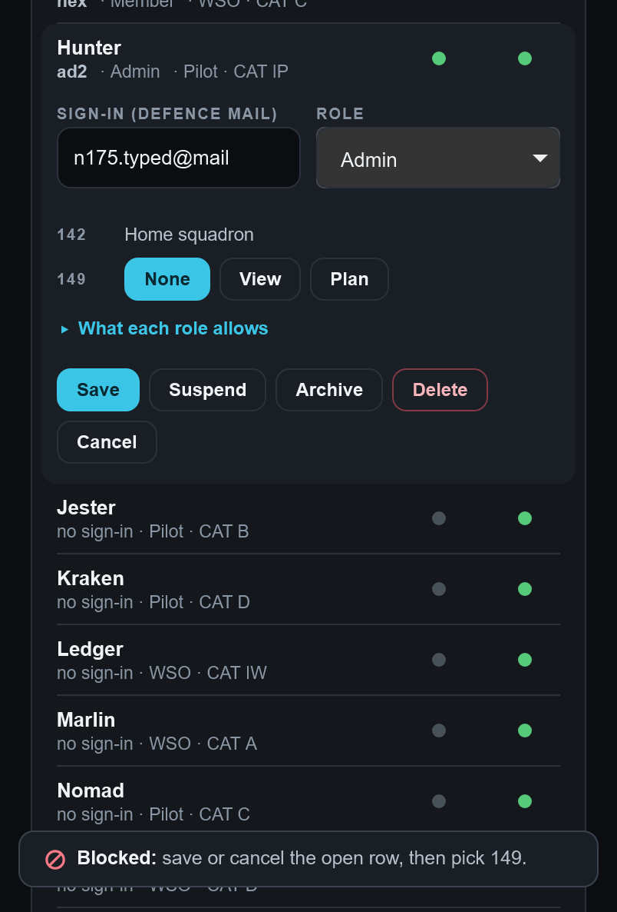
Drawn, phone: at the foot, the row in sight.
↑ The list
A7. A window left open on a page you are no longer looking at
Refused; the note says where the window is.
When this happens: Saber opens My leave on the Leave War, presses the Inputs tab without closing it, and picks 149. The Leave War keeps its windows open while you look at another page.
Today: at the pick nothing on the Inputs page shows that a window is open anywhere, and nothing is said. Back on the Leave War the window is still there, greyed, with "This is 142's. You picked 149 — close this to go on."; back on 142 it is live again. The Tracker's marking window and Edit chart layout, left the same way, close by themselves at the pick.
Recommended: the pick is refused, and the note says where the window is.
Blocked: close the open window on the Leave War, then pick 149.
Blocked: close the open window on the Tracker, then pick 149.
The other choice: a window on a page you are not looking at does not count, and the pick goes through with the window dealt with as it is today (greyed). One limit either way: if the squadron in view no longer offers that page at all, the window cannot be reached to close it, so it must not count then, or the person would be stuck.
 Drawn: on Inputs, My leave still open on the Leave War, 149 picked.
Drawn: on Inputs, My leave still open on the Leave War, 149 picked.
Changed in review. I agree. The page should name which Tracker windows refuse: it says the marking window and "Edit chart layout" close by themselves today, and also drafts a note for a window on the Tracker.
↑ The list
A8. A tap on the bell itself that would change squadron
Refused: "…then press the bell again."
When this happens: Saber is on 142 with an input window open. Someone has asked for access to 149, which lights his bell. A tap on a bell lit this way acts at once, with no list: it takes him to 149's Admin → Users.
Today: the tap moves him to 149 and the 142 window is left greyed behind him.
 Today: after the tap the bar reads 149; the 142 window is greyed with its band.
Today: after the tap the bar reads 149; the 142 window is greyed with its band.
Recommended: refused like a bell line, the note under the bell. The bell stays lit, so the second press works once the window is closed.
Blocked: close the open window, then press the bell again.
With a row open, or a change not saved: "…save or cancel the open row, then press the bell again." / "…press Retry to save your changes, then press the bell again."
 Drawn: the note under the bell, the window still live.
Drawn: the note under the bell, the window still live.
↑ The list
A9. A save still going when you pick
The pick waits for the save.
When this happens: you press Save on an input and pick the other squadron within about a third of a second, while the sign still says "Saving…". Rare, and it only matters if that save then fails.
Today: the pick goes through. If the save then fails, "Not saved — keep this page open" stands on 149, and Retry pressed there saves 142's input. That is the case you ruled out for a change already showing "Not saved".
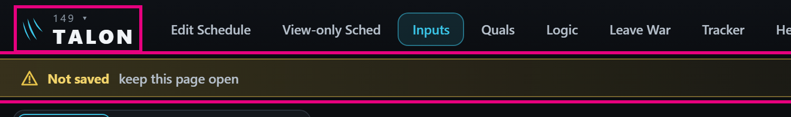
Today: the bar reads 149, and "Not saved" is about 142's input.
Recommended: the pick waits the moment it takes for the save to finish. If it saved, the pick goes through. If it failed, the pick is refused with the Retry note (A13).
The cost: on a slow connection the pick can take a moment longer with nothing on screen to say why. The other choice: the pick goes through as today, and a save that fails a moment later shows 142's band on 149.
Changed in review. I agree, with a limit: the pick waits only until the save lands or the app gives up on it and shows "Not saved"; then it is refused with the Retry note. It must never wait without end on a dead connection.
↑ The list
A10. Two reasons at once
The window first, then the open row, then Retry.
When this happens: a window is open and a change is also showing "Not saved" when you pick. Rare.
Recommended: one note at a time. It names the window first; after the window is closed, the next press names the open row if there is one, then Retry. A refusal always comes before the Tracker's unsaved-edits question, so you are never asked to discard chart edits only to be refused.
 Drawn: a window open and "Not saved" showing. The note asks for the window first.
Drawn: a window open and "Not saved" showing. The note asks for the window first.
↑ The list
A11. A refused bell line
Stays unread; the list stays open.
When this happens: Hunter is on 149 with a window open and presses a 142 line in his bell.
Today (with no guard): pressing a line marks it read and closes the list as it takes him there.
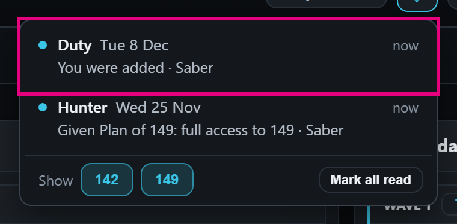
Today: the line before the press, unread.
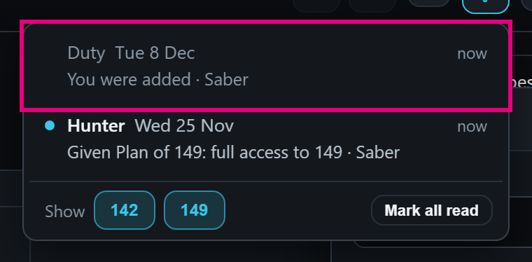
Today: after a press that went through, read.
Recommended: when the press is refused, the line stays unread and the list stays open, the note just under it. The line is still waiting for him after he closes the window. A refused press never goes through later by itself; he presses again.
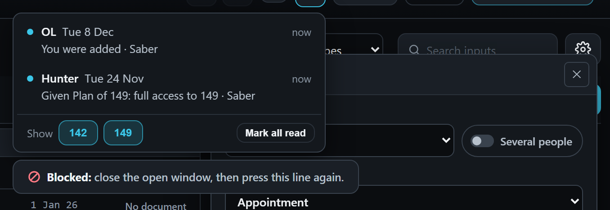
The drawing you approved: the list still open, the note under it.
↑ The list
A12. The squadron list with a window open
The list opens; the squadron you press is refused.
When this happens: a window is open and you press the squadron picker.
Recommended: the list still opens. Pressing a squadron in it is what gets refused, and the list closes. That way the note can name the squadron you chose ("…then pick 149").
The other choice: the picker itself is refused and no list opens. The note could then not name a squadron.
 The drawing you approved: 149 was pressed in the list; the list has closed and the note names 149.
The drawing you approved: 149 was pressed in the list; the list has closed and the note names 149.
↑ The list
A13. The note for a change not saved
"Blocked: press Retry to save your changes, then pick 149."
When this happens: "Not saved — keep this page open" is showing and you pick the other squadron, switch view or press a bell line. You ruled this refused; the words were a draft.
Recommended:
Blocked: press Retry to save your changes, then pick 149.
"…then switch to the member view." / "…then switch back to the admin view." / "…then press this line again."
"Changes", not "change": the app cannot tell whether one change or several are waiting. On a phone the pick form takes two lines. The note sits under the band so it never covers the Retry it points to.
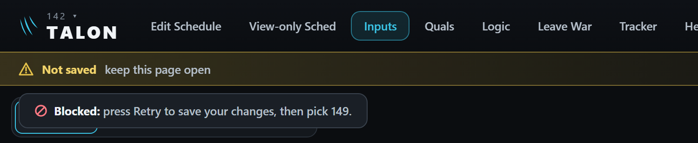
Drawn, desktop: under the band. Retry is at the right end of the same band.
 Drawn, phone: the band at the top, the note at the foot, two lines.
Drawn, phone: the band at the top, the note at the foot, two lines.
↑ The list
A14. Where the note stands on a tablet and a phone held on its side
Under the control wherever the top bar shows the squadron picker.
When this happens: you ruled the note under the control on a desktop and at the foot on a phone. A small tablet upright and a phone on its side are in between: both show the desktop's top bar with the squadron picker in it.
Recommended: one rule. Where the top bar shows the squadron picker, the note drops under what you pressed. It goes to the foot only when the press was inside the ☰ menu, which is an upright phone.
The other choice: at the foot on anything smaller than a desktop. On a phone on its side the foot note lies over the open input window's Delete button while it shows.
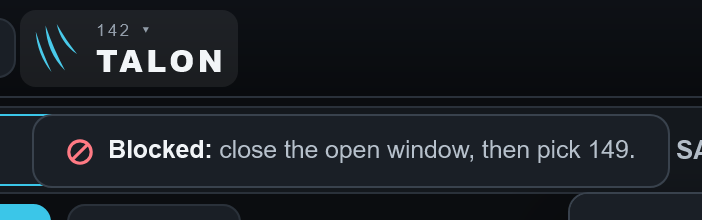
Drawn, tablet, recommended: under the picker.
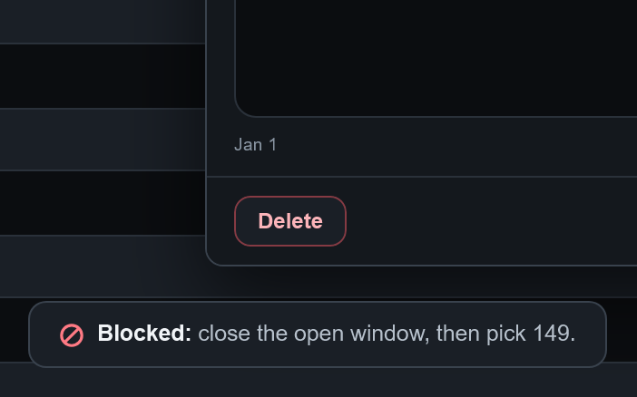
Drawn, tablet: at the foot.
 Drawn, phone on its side, recommended: under the picker.
Drawn, phone on its side, recommended: under the picker.
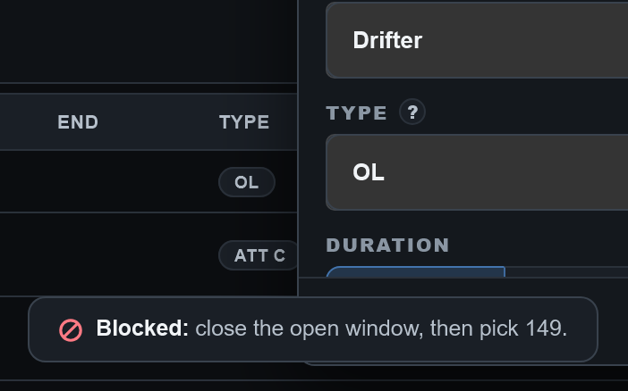
Drawn, phone on its side: at the foot, over Delete.
↑ The list
A15. A phone with Inputs settings or the Calendar window open
At the foot, as you ruled.
When this happens: on an upright phone these two windows leave the top bar free, so the squadron can be picked from ☰ over them. Two of your rulings meet here. On 10 Oct you ruled that while such a window is open a passing note stands at the top, clear of the window's buttons. On 24 Nov you ruled the guard's note at the foot on a phone.
Tried on the app: at the top the note lies over the whole top bar, the ☰ and the squadron control it is telling you about. At the foot it covers none of the window's buttons; the window stands mid-screen.
Recommended: at the foot, as your later ruling says.
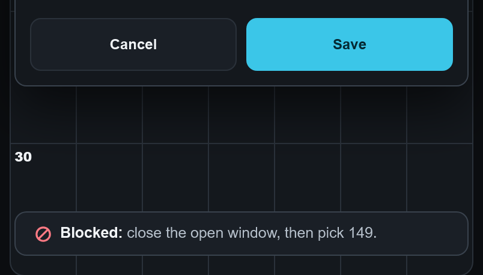
Drawn, recommended: at the foot.
 Drawn: at the top, over the top bar.
Drawn: at the top, over the top bar.
↑ The list
A16. The ☰ menu after a refused pick
It closes.
When this happens: on a phone you open ☰, open the squadron list and press 149 while a window is open behind the menu.
Today: after a pick that goes through, the menu stays open, now showing 149.
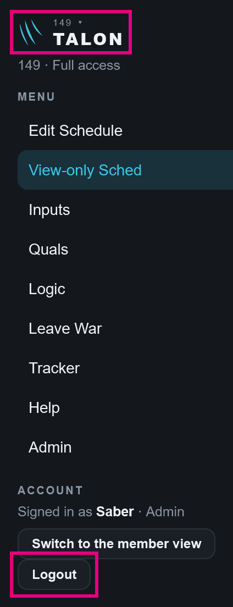
Today: the menu still open after a pick.
Recommended: after a refused pick the menu closes, so the note and the window it asks you to close are both in sight.
Drawn: the menu closed after the refusal, the note at the foot.
↑ The list
A18. A button that brings your own squadron back
Nothing to build if C4 is taken.
When this happens: Ranger, a member with View of 149, has 149 picked. He presses something that opens one of his own pages, which 149 does not offer him. The one such button found is "Check my quals" on the "Welcome back" card.
Today: the bar goes back to 142 and his Quals page opens, without a word. With "Not saved" showing, the same happens and the band comes along.
 Today: the card on 149.
Today: the card on 149.
 Today: after the press the bar reads 142.
Today: after the press the bar reads 142.
Recommended: with nothing open it works as today. With a window open or a change not saved it is refused like a pick, the note naming the button.
Blocked: press Retry to save your changes, then press Check my quals again.
Blocked: close the open window, then press Check my quals again.
Changed in review. If C4 is taken as recommended, the card is never on another squadron, so this button cannot be pressed there and these two notes are never shown. I would build nothing here and keep it as a rule for any later button of the same kind.
↑ The list
A19. A holiday's bell line while you are looking at another squadron
Your own squadron comes into view first.
When this happens: Hunter is 142's admin with View of 149 and has 149 picked. A day has been made a holiday on 142, so his bell holds "1 input needs an OIL answer". He taps it.
Today: 142's OIL list opens over 149's View-only Sched, the bar still reading 149. Answering and saving there writes 142's input.
 Today, phone: 142's OIL list, under a bar reading 149.
Today, phone: 142's OIL list, under a bar reading 149.
Recommended: 142 comes into view first, then the list opens, so the bar says whose list it is. (If a window is open or a change not saved, the tap is refused like any bell line to another squadron.)
Changed in review. Your answer today already covers this: a bell line about an input brings its squadron into view first. I would move it to "told, not asked".
↑ The list
A20. The Tracker's question at the member-view switch, on your own squadron
Asked always, as drawn.
When this happens: Saber, on 142, has an unsaved chart edit on the Tracker (a new event not yet saved) and presses his badge for the member view. You ruled that unsaved chart edits are asked about at the view switch, as a pick asks today.
Today: nothing is asked. On his own squadron the edit is still there in the member view, "Save changes" is still offered there and saves 142's chart, and the edit is still there on switching back. So here, unlike at a pick, nothing would be lost by not asking. (Moving a ball is saved at once and is never an unsaved edit.)
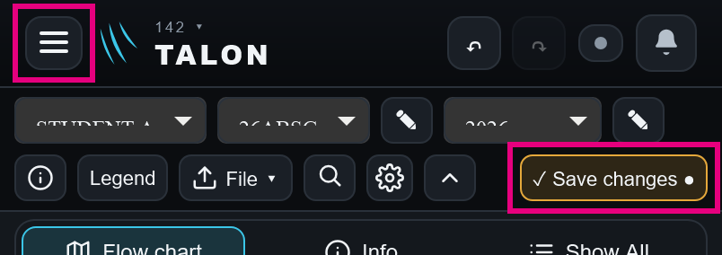
Today, phone: in the member view, "Save changes" still offered.
Recommended: asked always, both ways, as drawn for you on 24 Nov. One rule, and it ends the odd state of saving the chart from the member view.
Its cost: a "Discard them" pressed here throws away edits the switch itself would not have touched. The other choice: asked only where the switch would move the Tracker to another squadron.
 The drawing you saw on 24 Nov: the question at the switch.
The drawing you saw on 24 Nov: the question at the switch.
↑ The list
Group B: 12 that can wait (Logout, Undo, the refresh card). Tap to open.
B1. Logout while a change is not saved
"Your last changes aren't saved yet. Log out anyway?"
When this happens: "Not saved — keep this page open" is showing and you press Logout. A bad connection, most likely at a shared computer.
Today: nothing is asked, and nothing is lost. The sign-in screen comes up with the band and Retry still over it. The next sign-in waits ("The last change has not saved yet — check the connection. Sign in waits until it saves."). When Retry gets through, the change is saved and the screen says "Saved. Press Sign in again."
 Today, phone: after Logout, the sign-in waits until the change saves.
Today, phone: after Logout, the sign-in waits until the change saves.
You ruled that Logout asks here. The draft question you read said "Log out and lose it?". That is not what the app does, and I do not recommend changing the app to make it true.
Recommended: the question says what really happens.
Your last changes aren't saved yet. Log out anyway? — Log out · Stay
The other choice: Logout throws the waiting change away, with "Your last changes aren't saved. Log out and lose them?" — "Discard and log out" · "Stay". That would be a new way to lose work.
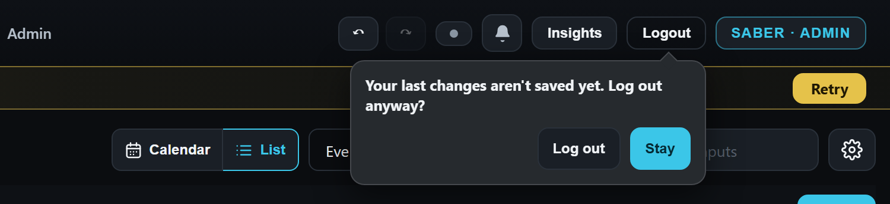
Drawn, recommended: nothing is lost, so "Log out" is a plain button.
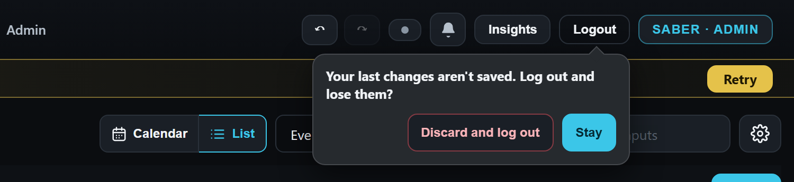
Drawn, the other choice: the change would be thrown away.
Changed in review. I agree that the question must not say "lose". I would add what does happen, so "anyway" has a meaning: "Your last changes aren't saved yet. They will save when the connection is back, if this page stays open. Log out anyway?"
↑ The list
B2. Logout with an input open and words typed in it
"Log out and lose them?"
When this happens: you press Logout with an input window open and unsaved words in it.
Today: you are signed out at once and the words are lost, nothing asked. You ruled that Logout asks the window's own question first. Its words today are about closing the window, not about logging out.
Recommended: at Logout the question and its button say Logout. The window's ✕ and Escape keep today's words.
This input has unsaved changes. Log out and lose them? — Discard and log out · Keep editing
 Drawn, today's words: "Close it and lose them?" — the button says close, and also logs you out.
Drawn, recommended: "Log out and lose them?"
Drawn, today's words: "Close it and lose them?" — the button says close, and also logs you out.
Drawn, recommended: "Log out and lose them?"
↑ The list
B3. Logout with an Admin → Users row open
Asked, as drawn.
When this happens: a row is open with an unsaved change and you press Logout.
Today: signed out, the change lost, nothing asked.
Recommended: asked, in the same shape as B2.
The open row has unsaved changes. Log out and lose them? — Discard and log out · Keep editing
 Drawn: the question hanging from Logout, the row open below.
Drawn: the question hanging from Logout, the row open below.
↑ The list
B4. Logout over a window that has no question of its own
One question that names the window.
When this happens: you press Logout with a holiday's name typed in "Add a holiday", or with answers chosen in a day's OIL list and not saved. Only the input window has a question of its own.
Today: signed out, the typing or the answers lost, nothing asked. (Place a bid and the Tracker's Edit details cover Logout with their shade on a desktop, so they cannot be left this way.)
Recommended: one question for all such windows, naming the window by its own title.
“Add a holiday” has unsaved changes. Log out and lose them? — Discard and log out · Keep editing
 Drawn: three windows are open; the question names the one that holds the typing.
Drawn: three windows are open; the question names the one that holds the typing.
Changed in review. I agree. Missing beside it: Logout with "Add a person", giving access or "+ New squadron" half filled in. The same one question would name each: "“Add a person” has unsaved changes. Log out and lose them?"
↑ The list
B5. Reaching Logout on a phone with a window open
The top bar stays in reach above the window.
When this happens: on a phone, Logout lives in the ☰ menu. An input window fills the screen and its title strip covers ☰. You ruled that Logout can be reached with a window open; nothing does that today.
Recommended (first picture): the window stands just under the top bar, so ☰ stays in reach and Logout is where you already look for it. Nothing new is added to the screen.
Its cost: the window is shorter by the height of the top bar (49px). Undo, Redo, the bell, the squadron list and the member-view line become reachable over the window too, as they already are on a desktop; a pick from there is refused with the note at the foot. The other choice (second picture): a Logout button on the window's own strip beside ✕. It reaches only Logout, puts a second Logout on screen, and a thumb slip beside ✕ logs you out.
 Drawn, recommended: the bar stays above the window; ☰ in reach.
Drawn, recommended: the bar stays above the window; ☰ in reach.
 Drawn, the other choice: Logout on the window's strip.
Drawn, the other choice: Logout on the window's strip.
 Drawn, recommended: ☰ opened over the window, Logout inside.
Drawn, recommended: ☰ opened over the window, Logout inside.
↑ The list
B6. Undo with changes waiting on two other squadrons
"Pick 142 or 149 to undo your changes there."
When this happens: you ruled that Undo reaches only the squadron in view and that the greyed button says why. A master admin has made changes on 142 and on 149 and is now looking at a third squadron.
Recommended: the reason names each squadron that holds a change of yours, and only squadrons you can pick now.
One: Pick 142 to undo your changes there.
Two: Pick 142 or 149 to undo your changes there.
Redo: Pick 142 to redo your changes there.
These replace the draft you read ("Your 142 changes are on 142's Undo."): there is only one Undo button, so "142's Undo" names a thing the screen does not have. A change made on 149 does not clear a Redo waiting on 142; today's app already keeps it.
 Drawn, desktop: the greyed Undo and its reason.
Drawn, desktop: the greyed Undo and its reason.
Changed in review. I agree for two squadrons. With many, the reason should name only the squadron of your latest change ("Pick 142 to undo your last change there."), so the note never grows into a list.
↑ The list
B7. Undo of "+ New squadron" while that squadron is in view
It waits on the squadron you made it from.
When this happens: Saber, on 142, makes squadron 150 with "+ New squadron", picks 150, and presses Undo.
Today: 150 is taken away under him. He lands back on 142's Admin page with only the passing note "Undid: adding a squadron" to say so.
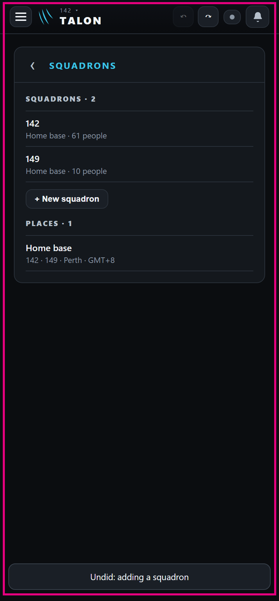
Today, phone: after Undo, back on 142 with a passing note.
Recommended: making a squadron belongs to the squadron you were on when you made it (142). On 150 the Undo is greyed and says "Pick 142 to undo your changes there." So a squadron is never undone while you are standing in it.
↑ The list
B8. The greyed Undo on a phone
A tap shows the reason.
When this happens: the greyed Undo's reason is shown when the mouse rests on it. A phone has no mouse: a tap and a long press both show nothing. You read on an iPhone, so today you cannot read why Undo is grey. This has been so for every greyed-Undo reason, not only the new one.
Recommended: on a phone, a tap on a greyed Undo or Redo shows its reason as the app's plain passing note at the foot (not the grey "Blocked:" note, which is for a change of yours that was refused).
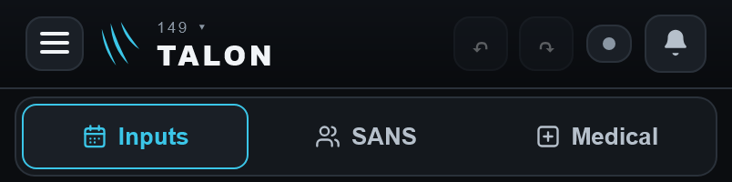
Today, phone: Undo greyed; nothing says why.
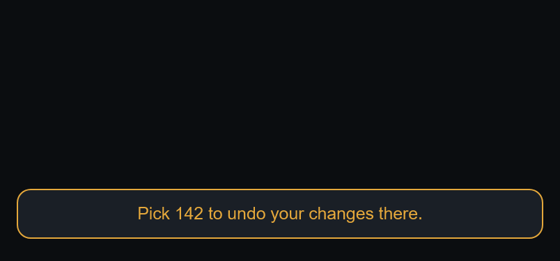
Drawn: after a tap, the reason at the foot.
↑ The list
B9. The refresh card when nothing is open
Shown all the same.
When this happens: Hunter's move to 149 takes effect at midnight while he has the app open with no window open.
Today: the bar changes from 142 to 149 and his badge from Admin to Member, without a word. The only sign is a dot on the bell.
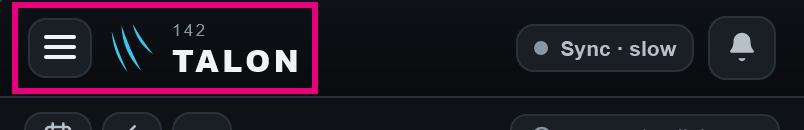
Today, phone: before midnight.
Today, phone: after midnight. 149, nothing said.
Recommended: the card is shown all the same, so he knows why the app changed under him. One rule: whenever the squadron or his rights change without his press, the card.
For a man who is not moving, midnight shows nothing; tried on the app. A posting out that ends his access keeps today's "Your access is suspended" screen. A posting to SANS changes nothing he can see, so nothing is shown.
↑ The list
B10. The refresh card's words, true on any day it is read
"You are 149's now".
When this happens: the card you approved says "You are 149's from today" and "took effect at midnight". A card raised at midnight is read the next morning, or two days later if the computer was left on. Then "from today" is no longer true.
Recommended: one wording that is true whenever it is read. This changes words you approved.
You are 149's now
Your move to 149 took effect on Thu 16 Jul. Refresh and sign in again to carry on. Anything you hadn't saved is lost.
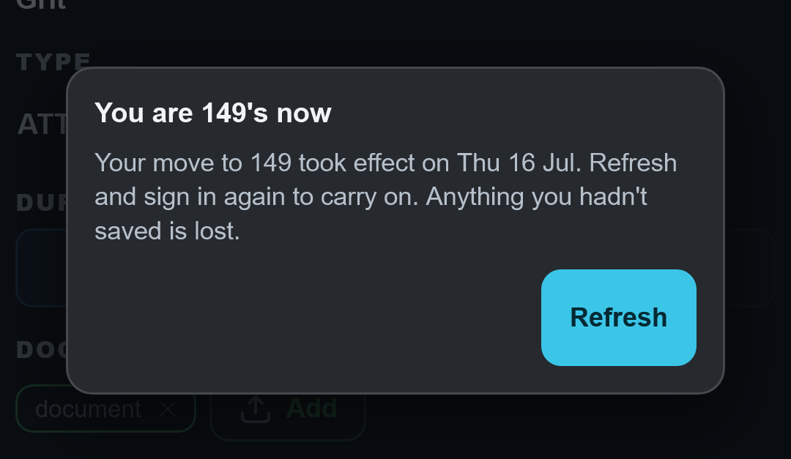
Drawn, recommended: the date in place of "today" and "midnight".
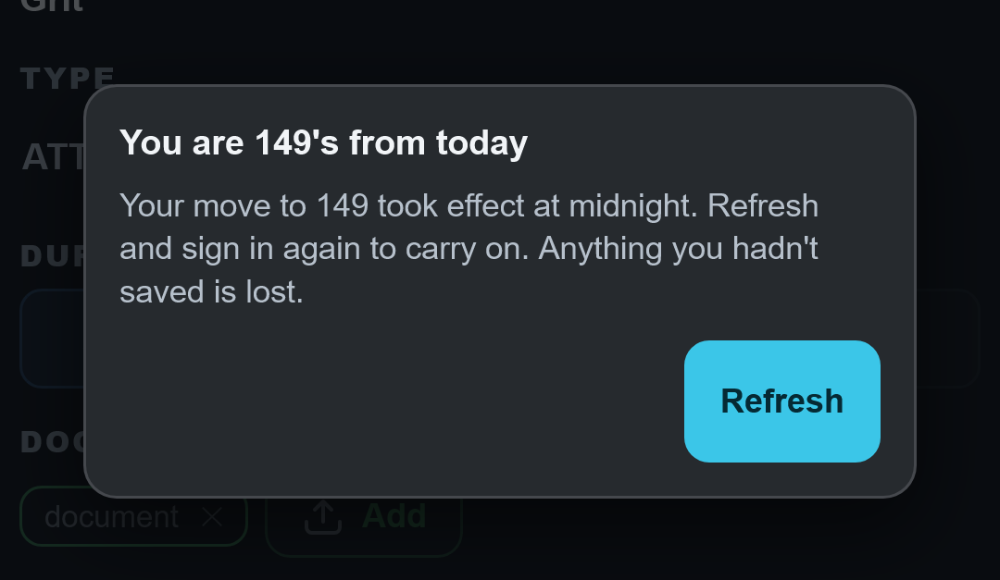
The card you approved.
↑ The list
B11. Refresh while a save is waiting
Refresh tries the save once first.
When this happens: the refresh card comes up while "Not saved" is showing.
Today: reloading the page while a save waits loses that change; only the browser's own "leave this page?" question stands in the way.
Recommended: the card's Refresh button tries the waiting save once, then reloads. If the save still fails the change is lost, as the card already says.
↑ The list
B12. Five small cases, all recommended as they are today
All left as they are.
When this happens: each looked like a way to lose work at a pick. Tried on the app, none loses anything, so I recommend no change. Take them as one.
Words typed in a day's note on Edit Schedule, the cursor still in it: saved into 142's note, where they were typed.
A figure typed in a Balances box and not left: saved at the pick, with its line in the edit history.
Words in Help's bug-report box: stay in the box on both squadrons until sent.
A calendar day's "+ Note" half-typed: saved onto 142's day. Its window is one the guard will refuse a pick over, so this stops arising.
A drag in progress: on a phone a second finger on the squadron control does nothing while a puck is held. On a desktop a pick can only be made mid-drag by the keys (48 presses of Tab); the drag then changes nothing on either squadron.
↑ The list
Found while pressing, and fixed in the build without a question — each goes against a ruling you already made:
- A tap on the bell's OIL question opens Hunter's 142 input on 149 and saves its answer there; you ruled today that the bell brings 142 into view first.
- Undo on 149 offers to undo a 142 change; your ruling says Undo reaches only the squadron in view.
- A member's bug report is lost when he logs out (C5).
Waiting for the later builds — no screen can show them yet, because no screen moves a man between squadrons or borrows one: a leave that spans a man's move (on both squadrons' lists today by your ruling), a moved man's old inputs and bell lines, his striped row on his old Leave War, a meeting naming him, his Tracker course, another squadron's sims shown on ours, and Insights' hours across two schedules. Each is put to you, drawn, when its build is designed.
Found in this review, not yet questions
- "Mark all read", pressed with 149 picked, also marks the 142 lines read. Under your rule of today it should mark only what the list is showing, and that is true today only when 142 is switched off under "Show".
- While an OIL question of yours is waiting, one tap on the bell goes straight to it, so the bell's list and its "Show" buttons cannot be reached until it is answered.
- A master admin's "All squadrons" tick on Admin → Users puts every squadron's people on a page whose bar reads one squadron. Grouped and named, and his own choice, but not yet put to you against "separate squadrons, separate views".
- On a phone an open input window covers the top bar, so the squadron number, and its two fades, cannot be seen while it is open. B5's recommendation (the bar stays above the window) would cure this; that is a reason to take B5 with the first build and not later.
Told, not asked
- "Your access has changed" cannot be raised by any press in this build: the app only learns of a change made elsewhere when it reloads. It is checked by a test now and tried on screen at the database step.
- When the Tracker fails part-way through a switch, the same card is shown each time it happens.
- A control reached by the keyboard answers exactly as by the mouse, and the note is read out by a screen reader.
- Faults found while pressing, filed for the same builds, not questions: 142's OIL list stays usable under a bar reading 149 and writes 142's records; Quals keeps Done in the member view; on a phone a tap on ☰ over "Place a bid" closes the bid instead of opening the menu.
That is all 40. ↑ Back to the list, or copy your reply from the bar below.